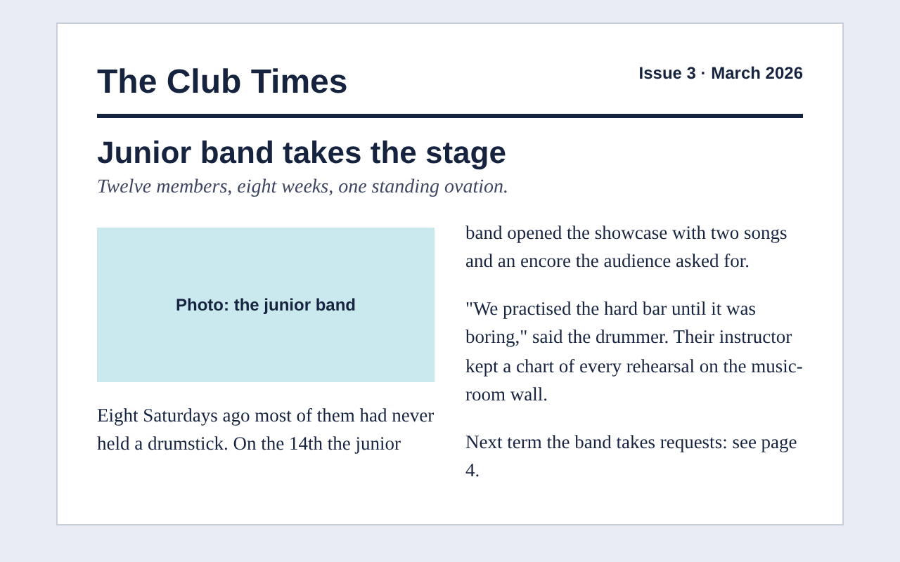

A newsletter repeats a structure on every page: masthead, columns, styles, page numbers.
Next Generation Genius · Year 1 · Foundation
When a document has many pages, consistency matters more than any one page.

A newsletter page: masthead, two columns, a photo with caption
Need a hand? Use Google Docs with a two-column section and three styles only.
Done early? Set up a master page in Scribus with columns and automatic page numbers.
Your work is marked against the rubric, and you may be asked to explain your choices. Show your own thinking.